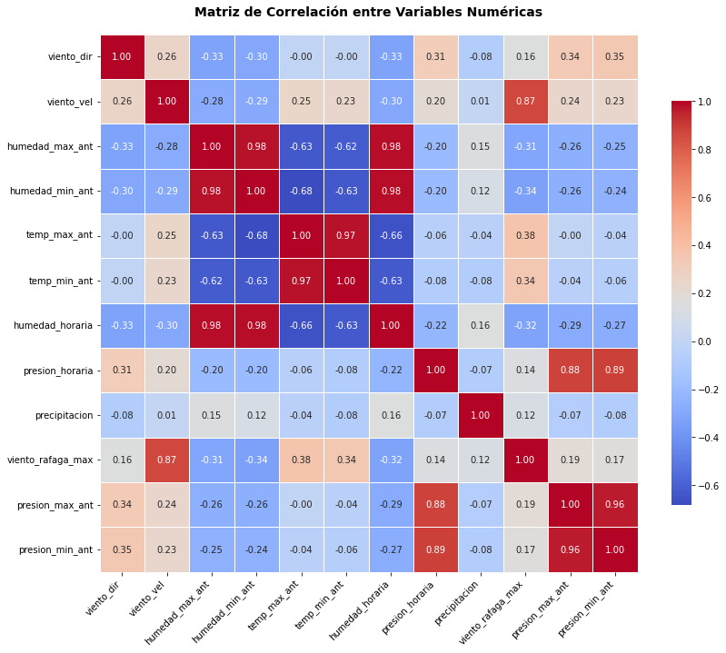
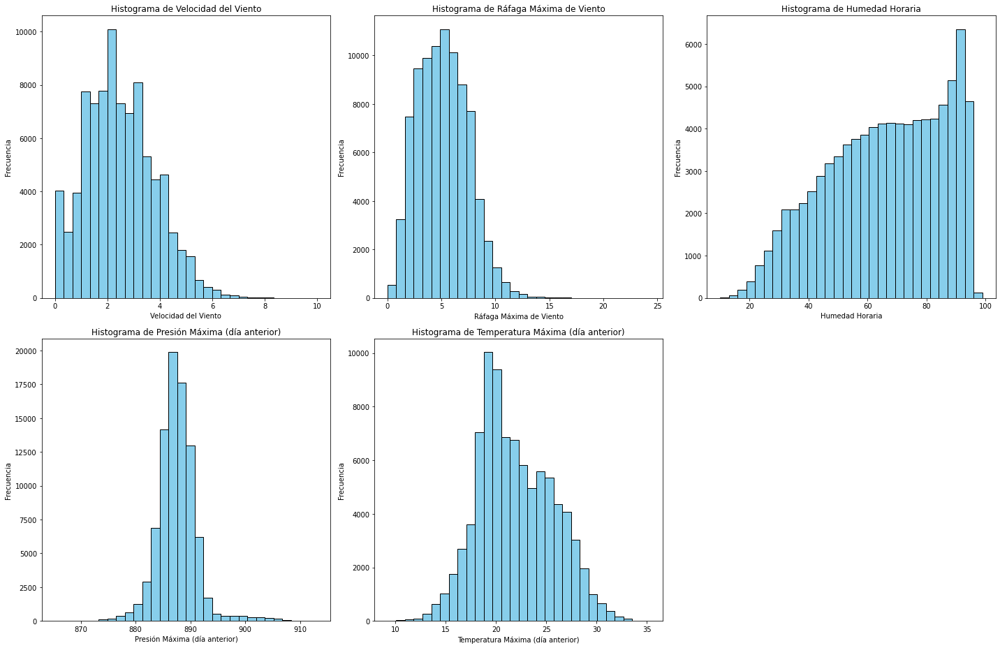
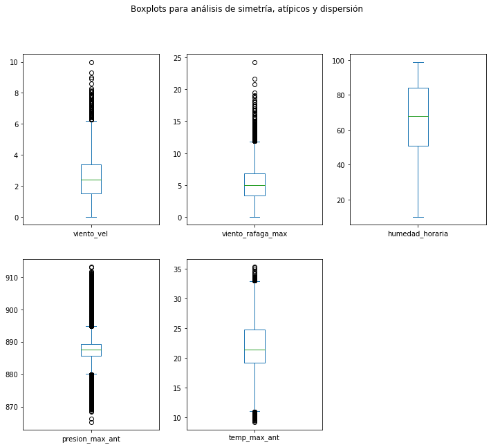
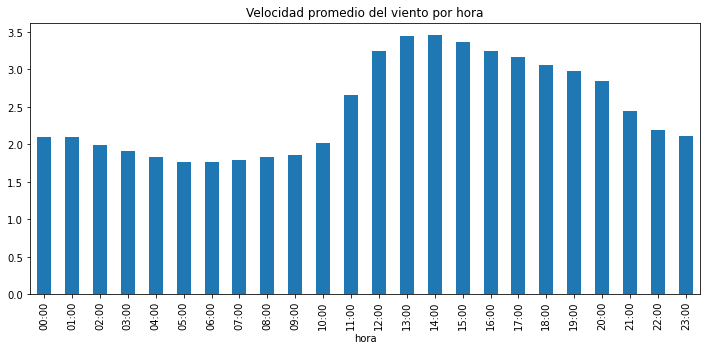
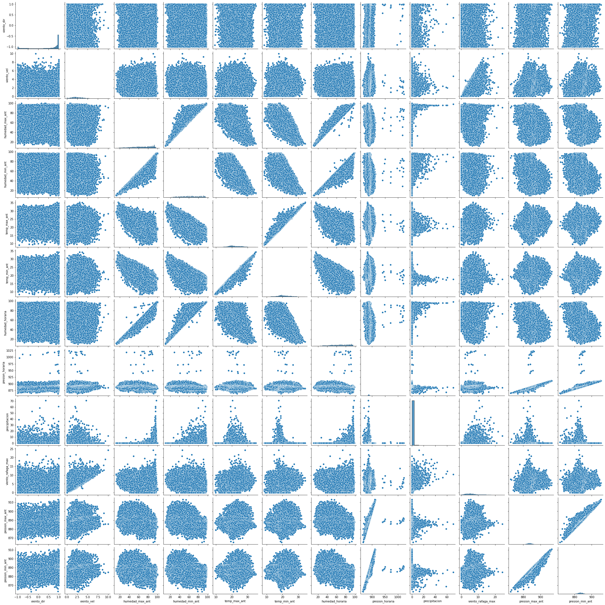
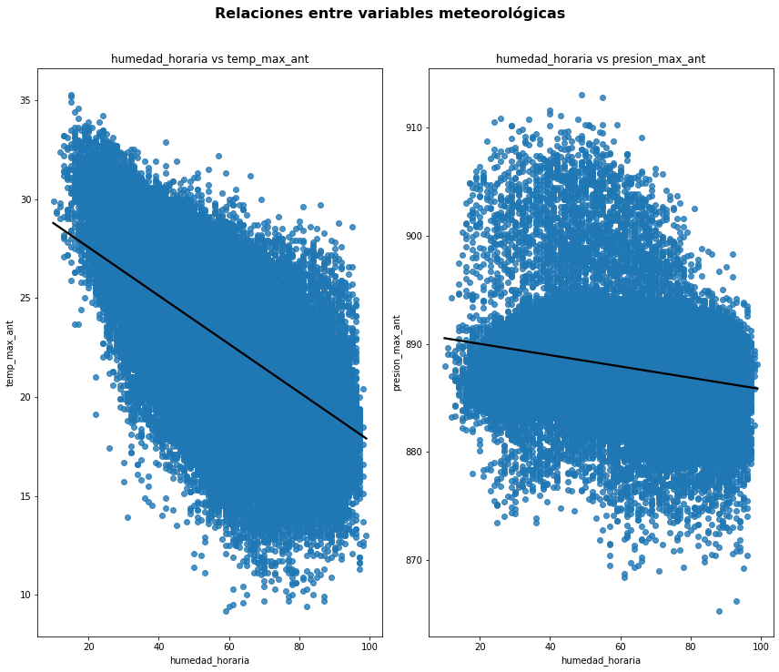
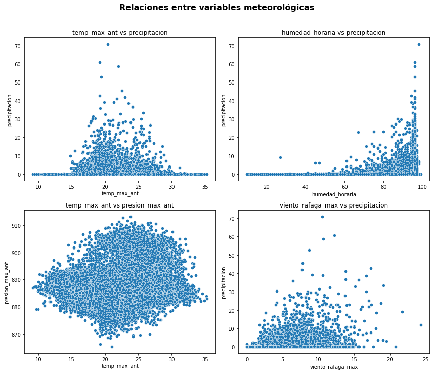

Ejercicio 1 - Velocidades del viento#
El pronostico de la velocidad del viento es fundamental, sobre todo por sus implicaciones en: seguridad en la aviación y la navegación, generación de energía eólica, agricultura, construcción, meteorología, recreación y deporte. Los datos suministrados, reportan diferentes mediciones que pueden explicar y permitir realizar la predicción de la velocidad del viento. En este capitulo, desarrollarenos el EDA y modelos de prediccion para la base de datos “Velocidades de viento”.
A continuacion, instalaremos las librerias quer seran utilizadas a lo largo del ejercicio.
import matplotlib.pyplot as plt
import numpy as np
import pandas as pd
import seaborn as sns
import warnings
from sklearn.exceptions import ConvergenceWarning
warnings.filterwarnings("ignore", category=ConvergenceWarning)
EDA y ETL#
En esta seccion, desarrollaremos el EDA y ETL de la base de datos de “Velocidades de viento” con el fin de comprender y analizar la problematica planteada.
df = pd.read_csv('/Users/user/Desktop/Maestria 2025/Maestria Uninorte/Primer semestre 2025/Machine Learning/Parcial1ML/docs/data_treino_dv_df_2000_2010.csv')
df
| HORA (UTC) | VENTO, DIRE��O HORARIA (gr) (� (gr)) | VENTO, VELOCIDADE HORARIA (m/s) | UMIDADE REL. MAX. NA HORA ANT. (AUT) (%) | UMIDADE REL. MIN. NA HORA ANT. (AUT) (%) | TEMPERATURA M�XIMA NA HORA ANT. (AUT) (�C) | TEMPERATURA M�NIMA NA HORA ANT. (AUT) (�C) | UMIDADE RELATIVA DO AR, HORARIA (%) | PRESSAO ATMOSFERICA AO NIVEL DA ESTACAO, HORARIA (mB) | PRECIPITA��O TOTAL, HOR�RIO (mm) | VENTO, RAJADA MAXIMA (m/s) | PRESS�O ATMOSFERICA MAX.NA HORA ANT. (AUT) (mB) | PRESS�O ATMOSFERICA MIN. NA HORA ANT. (AUT) (mB) | |
|---|---|---|---|---|---|---|---|---|---|---|---|---|---|
| 0 | 12:00 | 0.809017 | 1.8 | 69.0 | 60.0 | 22.6 | 20.7 | 61.0 | 888.2 | 0.0 | 3.8 | 888.2 | 887.7 |
| 1 | 13:00 | 0.965926 | 2.7 | 62.0 | 55.0 | 24.2 | 22.5 | 55.0 | 888.4 | 0.0 | 4.7 | 888.4 | 888.2 |
| 2 | 14:00 | 0.891007 | 2.0 | 56.0 | 50.0 | 25.5 | 24.3 | 51.0 | 888.1 | 0.0 | 4.9 | 888.4 | 888.1 |
| 3 | 15:00 | 0.848048 | 2.5 | 52.0 | 44.0 | 27.4 | 25.0 | 44.0 | 887.4 | 0.0 | 5.8 | 888.1 | 887.4 |
| 4 | 16:00 | 0.224951 | 2.4 | 50.0 | 43.0 | 27.1 | 25.5 | 46.0 | 886.5 | 0.0 | 5.8 | 887.4 | 886.5 |
| ... | ... | ... | ... | ... | ... | ... | ... | ... | ... | ... | ... | ... | ... |
| 87688 | 19:00 | -0.615661 | 5.6 | 83.0 | 78.0 | 21.8 | 21.1 | 80.0 | 879.1 | 0.0 | 12.3 | 879.8 | 879.1 |
| 87689 | 20:00 | -0.469472 | 4.9 | 84.0 | 79.0 | 21.7 | 21.0 | 84.0 | 879.2 | 0.0 | 9.9 | 879.2 | 878.9 |
| 87690 | 21:00 | -0.484810 | 4.5 | 86.0 | 82.0 | 21.2 | 20.6 | 86.0 | 879.7 | 0.0 | 8.9 | 879.8 | 879.2 |
| 87691 | 22:00 | -0.484810 | 3.2 | 88.0 | 85.0 | 20.6 | 20.2 | 88.0 | 880.5 | 0.0 | 8.0 | 880.5 | 879.6 |
| 87692 | 23:00 | -0.573576 | 2.3 | 95.0 | 88.0 | 20.2 | 19.3 | 95.0 | 881.1 | 0.6 | 7.5 | 881.1 | 880.5 |
87693 rows × 13 columns
Observamos 87693 muestras y 13 columnas de las cuales…
Renombramiento de columnas#
A continuación se muestra la correspondencia entre los nombres originales del dataset y los nuevos nombres utilizados para facilitar el análisis:
Nombre original |
Nuevo nombre |
|---|---|
HORA (UTC) |
|
VENTO, DIREÇÃO HORARIA (gr) |
|
VENTO, VELOCIDADE HORARIA (m/s) |
|
UMIDADE REL. MAX. NA HORA ANT. (AUT) (%) |
|
UMIDADE REL. MIN. NA HORA ANT. (AUT) (%) |
|
TEMPERATURA MÁXIMA NA HORA ANT. (AUT) (°C) |
|
TEMPERATURA MÍNIMA NA HORA ANT. (AUT) (°C) |
|
UMIDADE RELATIVA DO AR, HORARIA (%) |
|
PRESSAO ATMOSFERICA AO NIVEL DA ESTACAO, HORARIA (mB) |
|
PRECIPITAÇÃO TOTAL, HORÁRIA (mm) |
|
VENTO, RAJADA MAXIMA (m/s) |
|
PRESSÃO ATMOSFERICA MAX.NA HORA ANT. (AUT) (mB) |
|
PRESSÃO ATMOSFERICA MIN.NA HORA ANT. (AUT) (mB) |
|
# Renombramos los nombres de cada columna
df.columns = [
'hora',
'viento_dir',
'viento_vel',
'humedad_max_ant',
'humedad_min_ant',
'temp_max_ant',
'temp_min_ant',
'humedad_horaria',
'presion_horaria',
'precipitacion',
'viento_rafaga_max',
'presion_max_ant',
'presion_min_ant'
]
df.columns
Index(['hora', 'viento_dir', 'viento_vel', 'humedad_max_ant',
'humedad_min_ant', 'temp_max_ant', 'temp_min_ant', 'humedad_horaria',
'presion_horaria', 'precipitacion', 'viento_rafaga_max',
'presion_max_ant', 'presion_min_ant'],
dtype='object')
Empezaremos con el analisis de las variables…
Descripcion de tipos de variables#
En esta seccion …
var = [
'hora',
'viento_dir',
'viento_vel',
'humedad_max_ant',
'humedad_min_ant',
'temp_max_ant',
'temp_min_ant',
'humedad_horaria',
'presion_horaria',
'precipitacion',
'viento_rafaga_max',
'presion_max_ant',
'presion_min_ant'
]
df[var].describe().T
| count | mean | std | min | 25% | 50% | 75% | max | |
|---|---|---|---|---|---|---|---|---|
| viento_dir | 87693.0 | 0.405810 | 0.686247 | -1.0 | -0.156434 | 0.788011 | 0.970296 | 1.0 |
| viento_vel | 87693.0 | 2.466192 | 1.313968 | 0.0 | 1.500000 | 2.400000 | 3.400000 | 10.0 |
| humedad_max_ant | 87693.0 | 69.058465 | 19.640222 | 12.0 | 54.000000 | 72.000000 | 87.000000 | 100.0 |
| humedad_min_ant | 87693.0 | 63.176194 | 20.166336 | 10.0 | 48.000000 | 64.000000 | 80.000000 | 98.0 |
| temp_max_ant | 87693.0 | 21.921264 | 3.721386 | 9.2 | 19.200000 | 21.400000 | 24.700000 | 35.3 |
| temp_min_ant | 87693.0 | 20.684570 | 3.513744 | 8.4 | 18.400000 | 20.200000 | 23.100000 | 34.4 |
| humedad_horaria | 87693.0 | 66.146682 | 19.992327 | 10.0 | 51.000000 | 68.000000 | 84.000000 | 99.0 |
| presion_horaria | 87693.0 | 887.251925 | 4.012404 | 863.4 | 885.300000 | 887.200000 | 889.100000 | 1023.5 |
| precipitacion | 87693.0 | 0.160907 | 1.307515 | 0.0 | 0.000000 | 0.000000 | 0.000000 | 70.8 |
| viento_rafaga_max | 87693.0 | 5.161076 | 2.311157 | 0.0 | 3.400000 | 5.000000 | 6.800000 | 24.3 |
| presion_max_ant | 87693.0 | 887.580724 | 3.646750 | 865.3 | 885.600000 | 887.500000 | 889.300000 | 913.1 |
| presion_min_ant | 87693.0 | 886.891093 | 3.564539 | 862.8 | 885.000000 | 886.900000 | 888.800000 | 910.9 |
Observamos en la tabla anterior que…
df.isnull().sum()
hora 0
viento_dir 0
viento_vel 0
humedad_max_ant 0
humedad_min_ant 0
temp_max_ant 0
temp_min_ant 0
humedad_horaria 0
presion_horaria 0
precipitacion 0
viento_rafaga_max 0
presion_max_ant 0
presion_min_ant 0
dtype: int64
Observamos que no existen datos faltantes a lo largo del dataframe, por lo que no es necesario realizar un preprocesamiento de datos.
A continuacion…
Analisis de correlacion entre variables explicativas y de respuesta#
En esta seccion, analizaremos la correlacion entre las variables independientes (X) y la variable dependiente (y).
# Calcular la correlación
corr_matrix = df.corr()
# Crear figura más grande
plt.figure(figsize=(12, 10))
# Dibujar heatmap
sns.heatmap(
corr_matrix,
annot=True, # Mostrar los valores
fmt=".2f", # Formato de los números
cmap='coolwarm', # Mapa de color
square=True, # Cuadrícula cuadrada
cbar_kws={"shrink": 0.75}, # Barra de color más pequeña
linewidths=0.5, # Líneas entre celdas
annot_kws={"size": 10} # Tamaño del texto de los valores
)
# Ajustes de etiquetas
plt.xticks(rotation=45, ha='right', fontsize=10)
plt.yticks(rotation=0, fontsize=10)
# Título general
plt.title("Matriz de Correlación entre Variables Numéricas", fontsize=14, fontweight='bold', pad=20)
plt.tight_layout()
plt.show()

en la figura anterior, observamos…
df.corr()['viento_vel'].sort_values(ascending=False)
viento_vel 1.000000
viento_rafaga_max 0.868279
viento_dir 0.256588
temp_max_ant 0.247706
presion_max_ant 0.242446
presion_min_ant 0.231584
temp_min_ant 0.231472
presion_horaria 0.204031
precipitacion 0.009466
humedad_max_ant -0.282787
humedad_min_ant -0.291752
humedad_horaria -0.301358
Name: viento_vel, dtype: float64
Se evidencia una correlación significativa entre la variable de respuesta “viento_vel” y diversas variables independientes del conjunto de datos. Para el análisis, se seleccionarán las variables “vel_rafaga_max”, “humedad_horaria”, “presion_max_ant” y “temp_max_ant”, ya que presentan los niveles más altos de correlación con la variable objetivo.
Esta selección no solo responde a su fuerza de correlación, sino también a su capacidad para representar otras variables pertenecientes a sus respectivas categorías. Es decir, variables como presión, temperatura, humedad y viento cuentan con múltiples subcategorías que derivan de una misma fuente de medición. Por esta razón, las variables seleccionadas actúan como representativas de su grupo, y las altas correlaciones observadas entre subcategorías se explican por el hecho de provenir de una misma categoría física.
Analizaremos la variable de respuesta con respecto a las variables seleccionadas.
# Variables a graficar
variables = ['viento_vel', 'viento_rafaga_max', 'humedad_horaria', 'presion_max_ant', 'temp_max_ant']
titulos = [
'Velocidad del Viento',
'Ráfaga Máxima de Viento',
'Humedad Horaria',
'Presión Máxima (día anterior)',
'Temperatura Máxima (día anterior)'
]
# Crear figura con subplots (2 filas, 3 columnas)
fig, axes = plt.subplots(2, 3, figsize=(20, 13)) # Tamaño ajustado
# Aplanamos los ejes para facilitar el indexado
axes = axes.flatten()
# Graficar cada variable
for i, var in enumerate(variables):
axes[i].hist(df[var], bins=30, color='skyblue', edgecolor='black')
axes[i].set_title(f'Histograma de {titulos[i]}')
axes[i].set_xlabel(titulos[i])
axes[i].set_ylabel('Frecuencia')
# Eliminar el subplot vacío (último en posición 6 si solo usamos 5)
fig.delaxes(axes[-1])
plt.tight_layout()
plt.show()

En la figura anterior, podemos observar la distribucion de frecuencia de cada una de las variables explikcativas y variable de respuesta. Se evidencia…
Analisis de simetria y datos atipicos#
En esta seccion…
df[variables].plot(kind='box', subplots=True, layout=(2, 3), figsize=(12, 10), sharex=False)
plt.suptitle('Boxplots para análisis de simetría, atípicos y dispersión')
plt.show()

Observamos que…
df[variables].skew()
viento_vel 0.370276
viento_rafaga_max 0.411720
humedad_horaria -0.349514
presion_max_ant 1.024888
temp_max_ant 0.263013
dtype: float64
Observamos que… Interpretación:
≈ 0 → distribución simétrica
0 → asimetría positiva (cola a la derecha) < 0 → asimetría negativa (cola a la izquierda)
Analisis bivariado#
aqui realizaremos…
df.groupby('hora')['viento_vel'].mean().sort_index().plot(kind='bar', figsize=(12, 5), title='Velocidad promedio del viento por hora')
<AxesSubplot:title={'center':'Velocidad promedio del viento por hora'}, xlabel='hora'>

Observamos que…
sns.pairplot(df)
<seaborn.axisgrid.PairGrid at 0x161416d60>

De la figura anterior, podemos destacar las siguientes parejas de variables:
humedad_horaria vs temp_max_ant
humedad_horaria vs presion_max_ant
precipitacion vs temp_max_ant
precipitacion vs humedad_horaria
presion_max_ant vs temp_max_ant
# Lista de pares (x, y) a graficar
# Pares originales (los vamos a invertir en el gráfico)
pares = [
('humedad_horaria','temp_max_ant'),
('humedad_horaria', 'presion_max_ant')
]
# Crear figura con subplots: 1 fila, 2 columnas
fig, axes = plt.subplots(1, 2, figsize=(12, 10))
axes = axes.flatten()
# Graficar cada par con regplot
for i, (x, y) in enumerate(pares):
sns.regplot(data=df, x=x, y=y, ax=axes[i],
line_kws={'color': 'black'})
axes[i].set_title(f'{x} vs {y}', fontsize=12)
axes[i].set_xlabel(x)
axes[i].set_ylabel(y)
# Título general
plt.suptitle('Relaciones entre variables meteorológicas', fontsize=16, fontweight='bold', y=1.02)
plt.tight_layout()
plt.show()

Observamos que…
pares = [
('temp_max_ant', 'precipitacion'),
('humedad_horaria', 'precipitacion'),
('temp_max_ant', 'presion_max_ant'),
('viento_rafaga_max', 'precipitacion')
]
# Crear figura con subplots: 1 fila, 2 columnas
fig, axes = plt.subplots(2, 2, figsize=(12, 10))
axes = axes.flatten()
# Graficar cada par con regplot
for i, (x, y) in enumerate(pares):
sns.scatterplot(data=df, x=x, y=y, ax=axes[i])
axes[i].set_title(f'{x} vs {y}', fontsize=12)
axes[i].set_xlabel(x)
axes[i].set_ylabel(y)
# Título general
plt.suptitle('Relaciones entre variables meteorológicas', fontsize=16, fontweight='bold', y=1.02)
plt.tight_layout()
plt.show()

Por otro lado, vemos en la figura anterior …
Una vez realizado el analisis exploratorio, realizaremos el desarrollo de modelos de regresion para lograr predecir el valor de la velocidad del tiempo
Modelos de regresion#
Para los modelos de regresion, realizaremos una lista de modelos para poder tener un abanico de opciones que mejor logren entender el comportamiento de los datos. Estos modelos son los siguientes:
Par ala validacion, utilizaremos cross-validation para segvurar quye los modelos aplicados sea generalizables. A continuacion, instalaremos todas las librerias generales para cada uno de los modelos a realizar.
from sklearn.metrics import mean_squared_error, mean_absolute_error
from sklearn.model_selection import train_test_split
from sklearn.preprocessing import StandardScaler
from sklearn.pipeline import Pipeline
from statsmodels.stats.diagnostic import acorr_ljungbox
Modelo de regresion lineal#
En el siguiente codigo observamos la cofiguracion general para el desarrollo de los modelos. Aqui definimos las variables independientes y dependientes que utilizaremos para el desarrollo de modelos. Para este modelo en coincreto, se seleccionaron las variables analiadas en el EDA. La razon de usarlas es debvido a que este modelo es sensible a multicolunealidad entre variables independientes por lo que es necesario descartar variables que se expliquen mutuamente. ES por eso que con lo mencuioinado anteriuormente en el EDA, urilizaremos “viento_rafaga_max”, “humedad_horaria”, “presion_max_ant” y “temp_max_ant”.
# CONFIGURACIÓN GENERAL
features = [
'temp_max_ant', 'humedad_horaria', 'viento_rafaga_max',
'presion_max_ant']
target = 'viento_vel'
df = df.sort_values(by='hora').reset_index(drop=True)
ventanas_dias = [7, 14, 21]
horas_por_dia = 24
Entrenamiento y validacion del modelo
from sklearn.linear_model import LinearRegression
# PARTICIÓN TRAIN/TEST
train_size = int(len(df) * 0.8)
df_train = df.iloc[:train_size]
df_test = df.iloc[train_size:]
# RESULTADOS
resultados = []
for T_dias in ventanas_dias:
T_horas = T_dias * horas_por_dia
errores_val = []
for i in range(0, len(df_train) - T_horas - 1):
train_data = df_train.iloc[i:i+T_horas]
val_data = df_train.iloc[i+T_horas:i+T_horas+1]
X_train = train_data[features]
y_train = train_data[target]
X_val = val_data[features]
y_val = val_data[target]
# Pipeline: escalado + modelo lineal
pipeline = Pipeline([
('scaler', StandardScaler()),
('modelo', LinearRegression())
])
pipeline.fit(X_train, y_train)
y_pred = pipeline.predict(X_val)
rmse = mean_squared_error(y_val, y_pred, squared=False)
errores_val.append(rmse)
promedio_rmse = np.mean(errores_val)
resultados.append({
'modelo': 'LinearRegression',
'ventana_dias': T_dias,
'rmse_validacion': promedio_rmse
})
```
# Resultados de modelo entrenado
resultados_lr = pd.read_csv("ResultLR.csv")
# Selección de la mejor configuración
mejor_config = resultados_lr.loc[resultados_lr['rmse_validacion'].idxmin()]
T_final = int(mejor_config['ventana_dias'] * horas_por_dia)
# Preparación de datos
X_train_final = df_train[features].iloc[-T_final:]
y_train_final = df_train[target].iloc[-T_final:]
X_test = df_test[features]
y_test = df_test[target]
# Modelo final: LinearRegression
final_pipeline = Pipeline([
('scaler', StandardScaler()),
('modelo', LinearRegression())
])
# Entrenamiento y predicción
final_pipeline.fit(X_train_final, y_train_final)
y_test_pred = final_pipeline.predict(X_test)
# Métricas
mae = mean_absolute_error(y_test, y_test_pred)
mse = mean_squared_error(y_test, y_test_pred)
rmse = mean_squared_error(y_test, y_test_pred, squared=False)
mape = np.mean(np.abs((y_test - y_test_pred) / np.where(y_test == 0, np.nan, y_test))) * 100
ljungbox = acorr_ljungbox(y_test - y_test_pred, lags=[10], return_df=True)['lb_pvalue'].iloc[0]
# Resultados finales
resultados_test_final = {
'modelo': 'LinearRegression',
'ventana_dias': int(mejor_config['ventana_dias']),
'MAE': mae,
'MSE': mse,
'RMSE': rmse,
'MAPE (%)': mape,
'LjungBox p-value': ljungbox
}
# Mostrar
print("Evaluación final en test set:")
for k, v in resultados_test_final.items():
print(f"{k}: {v}")
---------------------------------------------------------------------------
NameError Traceback (most recent call last)
/var/folders/k9/_sfb2dlj32z_v_srr2ny3qnm0000gn/T/ipykernel_10849/1943386856.py in <module>
7
8 # Preparación de datos
----> 9 X_train_final = df_train[features].iloc[-T_final:]
10 y_train_final = df_train[target].iloc[-T_final:]
11 X_test = df_test[features]
NameError: name 'df_train' is not defined
Modelo Ridge y Lasso - regresion#
Para los siguientes modelos, al ser mas complejos estos no necesitan realizar analisis de multicolinealidad a las variables ya que estos no son sensibles a la multicolinealidad. por ende, setrabajaran los todas las variables disponibles de la base de datos
features = ['viento_dir','humedad_max_ant',
'humedad_min_ant', 'temp_max_ant', 'temp_min_ant', 'humedad_horaria',
'presion_horaria', 'precipitacion', 'viento_rafaga_max',
'presion_max_ant', 'presion_min_ant']
target = 'viento_vel'
from sklearn.linear_model import Ridge, Lasso
ventanas_dias = [7, 14, 21]
horas_por_dia = 24
alphas = [0.01, 0.1, 1.0] # valores de regularización
# PARTICIÓN TRAIN/TEST
train_size = int(len(df) * 0.8)
df_train = df.iloc[:train_size]
df_test = df.iloc[train_size:]
# MODELOS a evaluar
modelos = {
'Ridge': Ridge,
'Lasso': Lasso
}
# RESULTADOS
resultados = []
for nombre_modelo, Modelo in modelos.items():
for alpha in alphas:
for T_dias in ventanas_dias:
T_horas = T_dias * horas_por_dia
errores_val = []
for i in range(0, len(df_train) - T_horas - 1):
train_data = df_train.iloc[i:i+T_horas]
val_data = df_train.iloc[i+T_horas:i+T_horas+1]
X_train = train_data[features]
y_train = train_data[target]
X_val = val_data[features]
y_val = val_data[target]
# Pipeline: escalado + modelo
pipeline = Pipeline([
('scaler', StandardScaler()),
('modelo', Modelo(alpha=alpha))
])
pipeline.fit(X_train, y_train)
y_pred = pipeline.predict(X_val)
rmse = mean_squared_error(y_val, y_pred, squared=False)
errores_val.append(rmse)
promedio_rmse = np.mean(errores_val)
resultados.append({
'modelo': nombre_modelo,
'alpha': alpha,
'ventana_dias': T_dias,
'rmse_validacion': promedio_rmse
})
# MOSTRAR RESULTADOS
resultados_df = pd.DataFrame(resultados)
print(resultados_df.sort_values('rmse_validacion'))
---------------------------------------------------------------------------
KeyboardInterrupt Traceback (most recent call last)
/var/folders/k9/_sfb2dlj32z_v_srr2ny3qnm0000gn/T/ipykernel_10849/3999608911.py in <module>
40 ])
41
---> 42 pipeline.fit(X_train, y_train)
43 y_pred = pipeline.predict(X_val)
44 rmse = mean_squared_error(y_val, y_pred, squared=False)
/opt/miniconda3/envs/ml_venv/lib/python3.9/site-packages/sklearn/pipeline.py in fit(self, X, y, **fit_params)
388 """
389 fit_params_steps = self._check_fit_params(**fit_params)
--> 390 Xt = self._fit(X, y, **fit_params_steps)
391 with _print_elapsed_time("Pipeline", self._log_message(len(self.steps) - 1)):
392 if self._final_estimator != "passthrough":
/opt/miniconda3/envs/ml_venv/lib/python3.9/site-packages/sklearn/pipeline.py in _fit(self, X, y, **fit_params_steps)
316 self._validate_steps()
317 # Setup the memory
--> 318 memory = check_memory(self.memory)
319
320 fit_transform_one_cached = memory.cache(_fit_transform_one)
/opt/miniconda3/envs/ml_venv/lib/python3.9/site-packages/sklearn/utils/validation.py in check_memory(memory)
303
304 if memory is None or isinstance(memory, str):
--> 305 if parse_version(joblib.__version__) < parse_version("0.12"):
306 memory = joblib.Memory(cachedir=memory, verbose=0)
307 else:
/opt/miniconda3/envs/ml_venv/lib/python3.9/site-packages/sklearn/externals/_packaging/version.py in parse(version)
70 """
71 try:
---> 72 return Version(version)
73 except InvalidVersion:
74 return LegacyVersion(version)
/opt/miniconda3/envs/ml_venv/lib/python3.9/site-packages/sklearn/externals/_packaging/version.py in __init__(self, version)
290
291 # Store the parsed out pieces of the version
--> 292 self._version = _Version(
293 epoch=int(match.group("epoch")) if match.group("epoch") else 0,
294 release=tuple(int(i) for i in match.group("release").split(".")),
<string> in <lambda>(_cls, epoch, release, dev, pre, post, local)
KeyboardInterrupt:
# SELECCIÓN MEJOR CONFIGURACIÓN POR MODELO
resultados_df = pd.DataFrame(resultados)
mejores_configs = resultados_df.loc[resultados_df.groupby('modelo')['rmse_validacion'].idxmin()]
# EVALUACIÓN FINAL EN TEST SET
resultados_test_final = []
for _, fila in mejores_configs.iterrows():
modelo_nombre = fila['modelo']
modelo_clase = Ridge if modelo_nombre == 'Ridge' else Lasso
alpha_final = float(fila['alpha'])
T_final = int(fila['ventana_dias'] * horas_por_dia)
# Últimos datos para entrenamiento
X_train_final = df_train[features].iloc[-T_final:]
y_train_final = df_train[target].iloc[-T_final:]
X_test = df_test[features]
y_test = df_test[target]
modelo_final = modelo_clase(alpha=alpha_final)
final_pipeline = Pipeline([
('scaler', StandardScaler()),
('modelo', modelo_final)
])
final_pipeline.fit(X_train_final, y_train_final)
y_test_pred = final_pipeline.predict(X_test)
# Métricas
mae = mean_absolute_error(y_test, y_test_pred)
mse = mean_squared_error(y_test, y_test_pred)
rmse = mean_squared_error(y_test, y_test_pred, squared=False)
mape = np.mean(np.abs((y_test - y_test_pred) / np.where(y_test == 0, np.nan, y_test))) * 100
ljungbox = acorr_ljungbox(y_test - y_test_pred, lags=[10], return_df=True)['lb_pvalue'].iloc[0]
resultados_test_final.append({
'modelo': modelo_nombre,
'alpha': alpha_final,
'ventana_dias': int(fila['ventana_dias']),
'MAE': mae,
'MSE': mse,
'RMSE': rmse,
'MAPE (%)': mape,
'LjungBox p-value': ljungbox
})
# === MOSTRAR TABLA FINAL COMPARATIVA ===
tabla_comparacion = pd.DataFrame(resultados_test_final)
print("\n📈 Tabla de comparación final entre modelos:")
print(tabla_comparacion)
📈 Tabla de comparación final entre modelos:
modelo alpha ventana_dias MAE MSE RMSE MAPE (%) \
0 Lasso 0.01 21 0.522713 0.481036 0.693568 32.228967
1 Ridge 1.00 21 0.529935 0.490239 0.700171 32.416157
LjungBox p-value
0 1.047258e-07
1 1.423905e-08
Modelo KNN - regresion#
Cargamos la librerias y procedemos con el desarrollo del modelo.
from sklearn.neighbors import KNeighborsRegressor
vecinos = [3, 5, 7, 9]
# ORDEN TEMPORAL ASEGURADO
df = df.sort_values(by='hora').reset_index(drop=True)
# PARTICIÓN TRAIN/TEST
train_size = int(len(df) * 0.8)
df_train = df.iloc[:train_size]
df_test = df.iloc[train_size:]
# RESULTADOS
resultados = []
for T_dias in ventanas_dias:
T_horas = T_dias * horas_por_dia
for k in vecinos:
errores_val = []
# Validación deslizante sobre el set de entrenamiento
for i in range(0, len(df_train) - T_horas - 1):
train_data = df_train.iloc[i:i+T_horas]
val_data = df_train.iloc[i+T_horas:i+T_horas+1]
X_train = train_data[features]
y_train = train_data[target]
X_val = val_data[features]
y_val = val_data[target]
# Pipeline: escalado + modelo
pipeline = Pipeline([
('scaler', StandardScaler()),
('knn', KNeighborsRegressor(n_neighbors=k))
])
pipeline.fit(X_train, y_train)
y_pred = pipeline.predict(X_val)
rmse = mean_squared_error(y_val, y_pred, squared=False)
errores_val.append(rmse)
# Promedio RMSE para esta combinación
promedio_rmse = np.mean(errores_val)
resultados.append({
'ventana_dias': T_dias,
'k': k,
'rmse_validacion': promedio_rmse
})
# MOSTRAR RESULTADOS
resultados_df = pd.DataFrame(resultados)
mejor_config = resultados_df.loc[resultados_df['rmse_validacion'].idxmin()]
print("Resultados de validación:")
print(resultados_df.sort_values('rmse_validacion'))
print("Mejor combinación encontrada:")
print(mejor_config)
# Entrenar con toda la data de entrenamiento usando la mejor combinación
T_final = int(mejor_config['ventana_dias'] * horas_por_dia)
k_final = int(mejor_config['k'])
# Últimos T_final datos del entrenamiento
X_train_final = df_train[features].iloc[-T_final:]
y_train_final = df_train[target].iloc[-T_final:]
# Test completo
X_test = df_test[features]
y_test = df_test[target]
# Modelo final
final_pipeline = Pipeline([
('scaler', StandardScaler()),
('knn', KNeighborsRegressor(n_neighbors=k_final))
])
final_pipeline.fit(X_train_final, y_train_final)
y_test_pred = final_pipeline.predict(X_test)
rmse_test = mean_squared_error(y_test, y_test_pred, squared=False)
print(f"RMSE en el test final: {rmse_test:.4f}")
Resultados de validación:
ventana_dias k rmse_validacion
10 21 7 0.524837
11 21 9 0.525935
9 21 5 0.528605
6 14 7 0.543419
5 14 5 0.545474
7 14 9 0.546189
8 21 3 0.546555
4 14 3 0.563643
1 7 5 0.582458
2 7 7 0.584656
3 7 9 0.591270
0 7 3 0.595073
Mejor combinación encontrada:
ventana_dias 21.000000
k 7.000000
rmse_validacion 0.524837
Name: 10, dtype: float64
RMSE en el test final: 0.7792
# Cálculo de métricas
mae_test = mean_absolute_error(y_test, y_test_pred)
mse_test = mean_squared_error(y_test, y_test_pred)
rmse_test = mean_squared_error(y_test, y_test_pred, squared=False)
# Cuidado: evitar división por cero en MAPE
mape_test = np.mean(np.abs((y_test - y_test_pred) / np.where(y_test == 0, np.nan, y_test))) * 100
# Ljung-Box Test para autocorrelación de los errores
residuos = y_test - y_test_pred
ljungbox_result = acorr_ljungbox(residuos, lags=[10], return_df=True)
ljungbox_pvalue = ljungbox_result['lb_pvalue'].iloc[0]
# Guardar en un diccionario para futura tabla
resultados_modelo = {
'modelo': 'KNN',
'ventana_dias': int(mejor_config['ventana_dias']),
'k': k_final,
'MAE': mae_test,
'MSE': mse_test,
'RMSE': rmse_test,
'MAPE (%)': mape_test,
'LjungBox p-value': ljungbox_pvalue
}
resultados_modelo
{'modelo': 'KNN',
'ventana_dias': 21,
'k': 7,
'MAE': 0.6037972518387593,
'MSE': 0.607186596401489,
'RMSE': 0.7792217889673575,
'MAPE (%)': 43.16984660277574,
'LjungBox p-value': 1.721179779770677e-33}
En el codigo anterior calculamos las metricas de MAPE, MAE, MSE y Ljung-box para compararlos con los demas modelos que desarrollaremos.